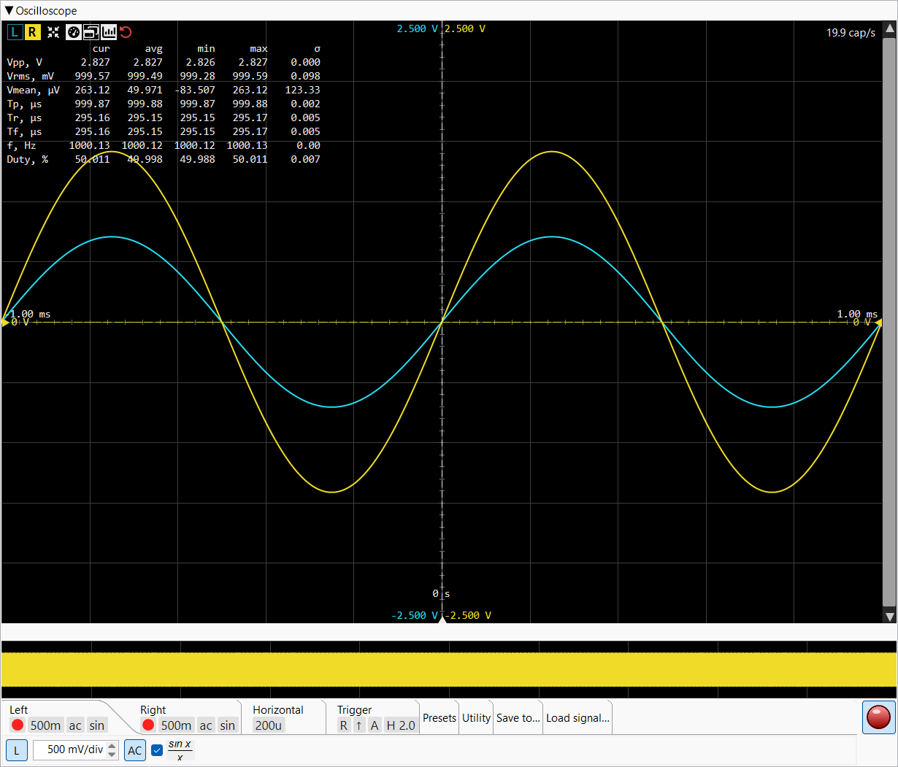

Live time-domain view of the captured signal. Two independent
channels (L / R) share the trigger; each has its own V/div,
coupling, interpolation, and vertical offset. The capture rate
readout in the top-right corner (cap/s) shows how
many frames per second the view is rendering.

Row of square buttons at the top-left of the scope canvas. L / R always shown; the rest appear once measurements have been computed.
Toggle buttons that select which channel drives the measurement table and the active V/div tab below. The button background takes the channel's trace colour when selected. L and R can be active independently — pressing one doesn't deselect the other.
Arrows-to-circle icon. One-shot: adjusts the time base so roughly 1.5 periods fit on screen, and the V/div so the trace spans ~75 % of the vertical area. Uses the currently-selected channel's measured period and Vpp.
Toggles the entire measurement table overlay on and off. When hidden, only the trace and the L / R buttons remain.
Pops the measurement table out into a separate tool window so it can sit alongside the main shell. Visible only when the table itself is visible. Closing the tool window returns the table to the main view.
Chart-column icon. Shows / hides the
avg / min / max / σ columns of the measurement
table. The worker keeps computing them regardless; the toggle
only affects rendering.
Red rotate-left icon. Clears the rolling-window history that feeds the stats columns, so the next frame starts a fresh averaging window. Useful after changing test conditions.
Compact mono-spaced grid in the top-left of the canvas. Eight
rows, up to five value columns (cur + the four
stats columns).
| Row | Meaning |
|---|---|
| Vpp | Peak-to-peak voltage (max − min over the visible frame). |
| Vrms | Root-mean-square voltage of the frame. |
| Vmean | DC mean — useful for spotting offsets. |
| Tp | Period (seconds). Estimated from zero-crossings of the trigger-channel signal. |
| Tr | Rise time (10 % → 90 % of Vpp). |
| Tf | Fall time (90 % → 10 %). |
| f | Frequency = 1 / Tp, displayed in Hz with high precision for clean sines. |
| Duty | Duty cycle as % of period — high-time / period. |
Rolling-window statistics over a configurable averaging window (see Preferences → Oscilloscope → Measurement average). σ is the population standard deviation. The window is ~33 s at 30 fps by default; the Reset button wipes the slate.
Yellow horizontal marker at the right edge of the canvas showing the current trigger level (in volts) for the active trigger channel. Drag vertically to set a new level; double-click to centre.
Yellow arrow at the bottom edge marking the trigger time
(0 s by default). Drag horizontally to offset the
visible window before / after the trigger point;
double-click to centre.
Each channel has a thin slider down the side of the canvas (left edge for L, right edge for R) showing the channel's vertical zero-line position. The active channel (per L/R pick) is the one the slider moves; the inactive channel is shown for reference but can't be dragged from here.
Hovering over the canvas shows a dashed grey cross at the
cursor; the readout box near the cursor lists the time-axis
value (t = ...) and the voltage at that point.
The CTabFolder at the bottom of the pane holds per-channel, trigger and utility settings. Each tab's tile row (painted under the tab label) shows the live state for that tab's key controls so you don't have to switch tabs to see what's set.
Controls for the left channel. Contains the channel toggle, V/div selector, AC/DC button, and Sin/Lin checkbox. Same layout for the Right tab.
Square toggle that enables / disables the channel. When off, the trace isn't drawn and the channel can't be picked as the trigger source.
Step selector with standard 1-2-5-10 values. Mouse wheel
scrolls through the list; typing a value accepts any unit
(1m, 20m, 500m, etc.).
Independent per channel.
AC mode subtracts the running DC mean from the displayed trace so a small AC component on top of a large DC offset is visible. The underlying measurements are still computed on the raw samples — only the displayed trace is shifted.
Per-channel checkbox shown with a small sinc-shape image. When checked, the trace is rendered with Lanczos sinc interpolation (proper bandlimited reconstruction); when unchecked, straight-line interpolation between samples. Sinc costs more CPU and only matters when adjacent samples are visibly far apart on screen.
Identical layout to the Left tab — channel toggle, V/div, AC/DC and Sin/Lin, but for the right channel.

Step selector with the standard 1-2-5-10 series spanning ns/div .. s/div. The trace centre stays put on a t/div change — only the visible window's width changes.

Pair of L / R toggles picking which channel drives the trigger comparator.
↑ / ↓ pair. Rising edge triggers when the signal crosses the trigger level going up; falling edge for going down.
A / N / S — Auto, Normal, Single.
Small play icon. Only active when the mode is Single. Pressing it arms the next single-shot capture.
Checkbox + step selector in division units (0.0 .. 5.0 in 0.1
steps). Schmitt-style trigger hysteresis: a rising-edge
trigger fires only when the signal first dropped below
(level − hyst) and then crossed above
(level + hyst). Suppresses false triggers on
noisy signals. The hysteresis selector greys out when the
checkbox is off; the value is preserved when toggled.

Editable combo + Save / Load / Delete buttons. Save snapshots every per-channel and per-trigger control (V/div, AC/DC, Sin/Lin, t/div, trigger channel / edge / mode, hysteresis enable + value). Load applies a snapshot. Delete asks for confirmation.

Camera icon. Renders the scope pane to a PNG at a chosen resolution. The render uses an offscreen replica of the pane, so the visible window's size doesn't constrain the output.
Crosshair icon. Opens the calibration dialog which derives the ADC's full-scale voltage from a known reference signal (a calibrator or a precision generator) and saves it in preferences. Disabled until a capture is running.

Writes the last N seconds of capture to a file. The folder button picks the destination; the step field selects the duration; the floppy-disk button writes.

Loads a previously-recorded file as the scope's data source instead of the live ADC. Useful for offline analysis: the same trigger / measurement / FFT pipeline runs over the recorded samples. Folder button picks the file.
Each tab's label has a row of small pill-shaped tiles below it showing the active value of that tab's main controls. Tiles are passive — they're never interactive, but their tooltips describe what each value means. Visible even when the tab body is collapsed.
Red filled circle on the Left / Right tab when the channel is enabled. Empty / hidden when disabled.
Short SI value (1m, 500m, 1)
showing the channel's volts-per-division.
Two-letter pill — ac or dc — for the
channel's coupling mode.
sin when sinc interpolation is on, lin
when off.
Short value on the Horizontal tab — e.g. 200u,
1m, 20m.
L or R on the Trigger tab.
↑ for rising, ↓ for falling.
A, N or S — Auto, Normal, Single.
H X.X (e.g. H 2.0). Visible
only when hysteresis is enabled — the absence of this tile
means hysteresis is off.